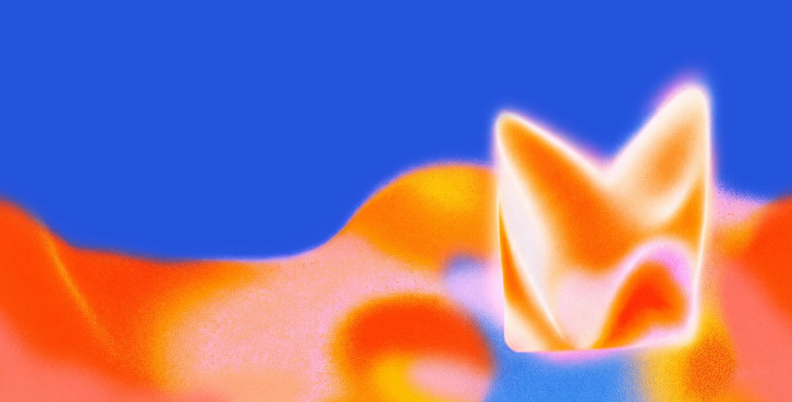
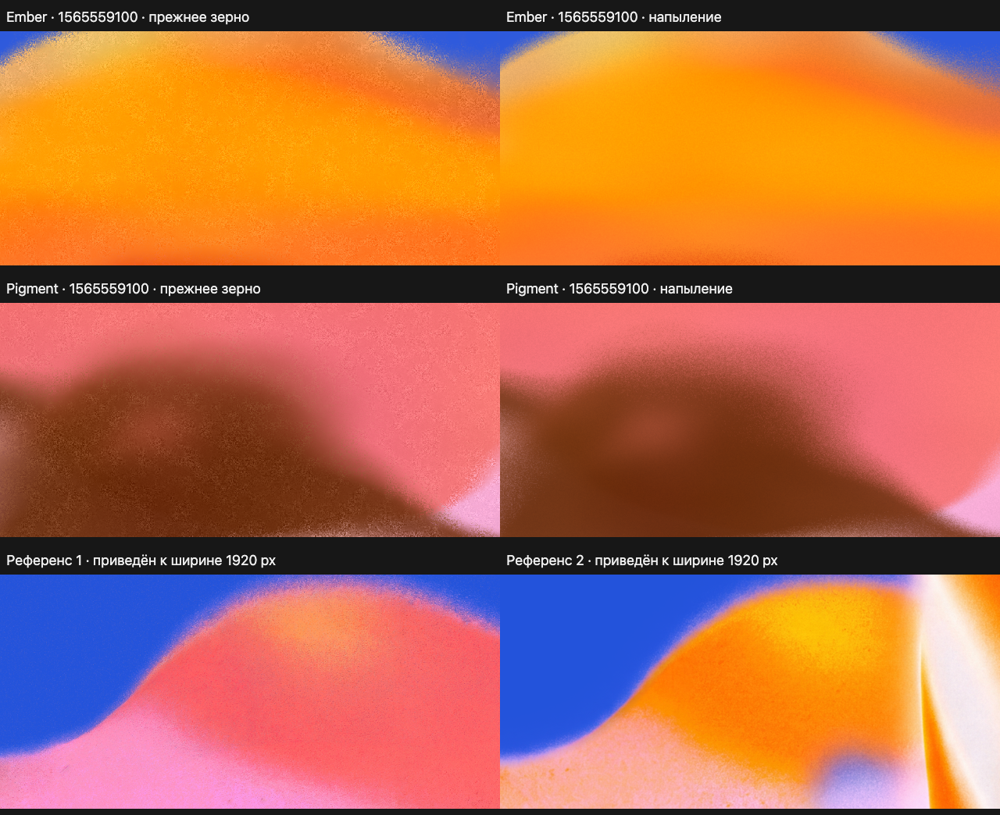
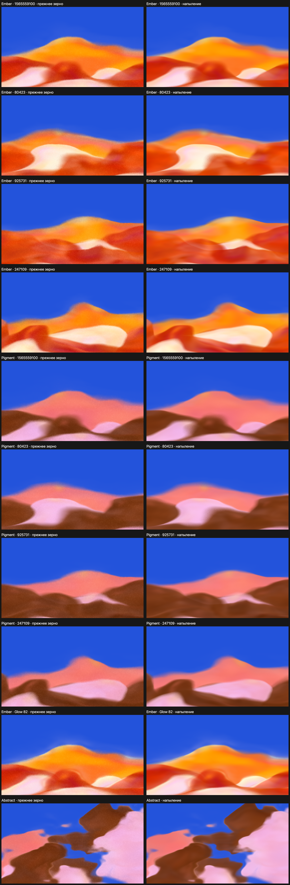

Слева — прежнее зерно, справа — мелкое цветное напыление. Параметры и seed совпадают. В плотных пятнах фактура спокойная, на переходах видны отдельные частицы краски.
Сохранены 10 сравнений на одинаковых seed и параметрах.
Открыть инструментДва верхних ряда: до / после. Нижний ряд: референсы 1 и 2. Все изображения приведены к ширине 1920 px перед выбором фрагмента.


